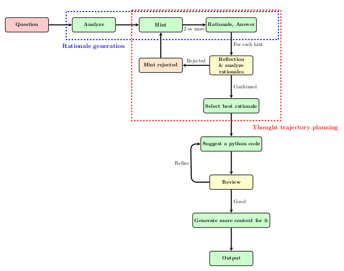
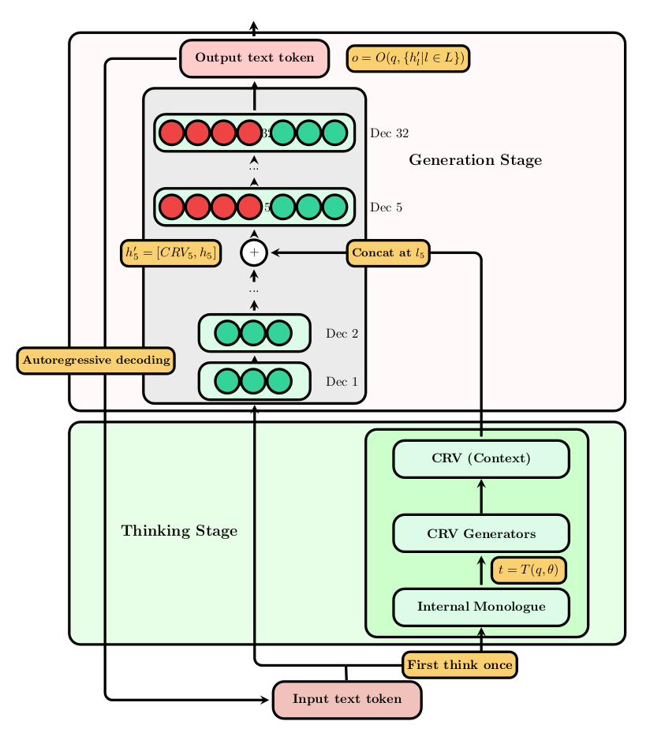

Despite advances in large language models (LLMs) for code generation, they still struggle in effectively utilizing contextual information throughout the generation process. To tackle this challenge, we introduce the Neural Integration of Iterative Reasoning (NIR) framework, which offers a new method for incorporating Context Representation Vectors (CRVs) at multiple levels within LLMs. NIR boosts the ability of these models to generate code without needing fine-tuning, allowing it to be used across various LLM architectures. We assess NIR by testing it with LLaMA 3.1 on the MBPP dataset, focusing on early, mid, and deep integration stages. Our experiments show that the depth of CRV integration has a notable impact on several facets of code generation, including response rates, syntactic correctness, and overall code structure. Deeper integration generally improves syntactic accuracy and code conciseness, while mid-layer integration shows optimal performance in semantic tasks. We report detailed evaluation metrics that assess code quality, complexity, and structure. Our findings indicate possible trade-offs among various code quality measures and emphasize the potential of adaptive integration strategies. While NIR demonstrates promising results, we also identify limitations such as dataset specificity and output inconsistencies. This study contributes to understanding contextual information processing in LLMs and might be useful for future developments in codeLLMs. We conclude by outlining future research directions, including multi-layer integration and dynamic adaptation strategies.


| Metric | Layer 1 | Layer 10 | Layer 23 | Original |
|---|---|---|---|---|
| Response Rate (Higher is better) | 0.5799 | 0.9941 | 0.9941 | 0.9941 |
| Sample Size | 169 | 169 | 169 | 169 |
| Metric | Layer 1 | Layer 10 | Layer 23 | Original |
|---|---|---|---|---|
| Syntactic Correctness (Higher is better) | 0.1915 | 0.8690 | 0.9762 | 0.9762 |
| Function Name Consistency (Higher is better) | 0.9574 | 1.0000 | 0.9821 | 0.9940 |
| Metric | Layer 1 | Layer 10 | Layer 23 | Original |
|---|---|---|---|---|
| Cyclomatic Complexity (Lower is better) | 0.4468 | 2.0714 | 2.5952 | 2.3571 |
| Metric | Layer 1 | Layer 10 | Layer 23 | Original |
|---|---|---|---|---|
| Lines of Code (Lower is better) | 8.2234 | 11.5893 | 6.0952 | 15.7262 |
| No. Characters (Lower is better) | 217.1596 | 335.9464 | 198.0119 | 535.0417 |
| Comment Lines (A balance is ideal, too high might indicate over-commenting) | 0.0745 | 1.2262 | 0.3750 | 3.0714 |
| Comment Ratio (A balance is ideal, too high might indicate over-commenting) | 0.0140 | 0.0852 | 0.0256 | 0.1295 |
| Metric | Layer 1 | Layer 10 | Layer 23 | Original |
|---|---|---|---|---|
| h1 (Distinct Operators) (Lower is better) | 2.0319 | 3.0357 | 2.8036 | 3.7143 |
| h2 (Distinct Operands) (Lower is better) | 11.3511 | 20.6726 | 17.1250 | 32.7917 |
| N1 (Total Operators) (Lower is better) | 4.9894 | 6.5774 | 6.2500 | 7.6786 |
| N2 (Total Operands) (Lower is better) | 30.2128 | 49.1786 | 42.2321 | 83.3274 |
| Metric | Layer 1 | Layer 10 | Layer 23 | Original |
|---|---|---|---|---|
| Vocabulary (Lower is better) | 13.3511 | 23.5655 | 19.9286 | 36.5000 |
| Length (Lower is better) | 43.7660 | 61.7381 | 54.9464 | 97.1905 |
| Volume (Lower is better) | 170.4025 | 291.6987 | 252.0961 | 511.6619 |
| Metric | Layer 1 | Layer 10 | Layer 23 | Original |
|---|---|---|---|---|
| Difficulty (Lower is better) | 2.6944 | 3.8036 | 3.7718 | 4.8205 |
| Effort (Lower is better) | 732.6550 | 1431.2053 | 1712.3707 | 2925.4783 |
Examining the code generated after integrating at Layer 10 of our NIR framework for the task of checking distinct elements in a tuple, we observe:
def check_distinct(tup):
return len(tup) == len(set(tup))
This solution demonstrates a concise and elegant approach to the problem. The use of Python's built-in set data structure showcases an understanding of efficient data manipulation. The one-line implementation is both readable and efficient, directly comparing the length of the original tuple with the length of its set representation.
Comparing this to the original model's output:
def check_distinct(numbers):
""" Checks if all numbers in the tuple are distinct.
Args:
numbers (tuple): A tuple of integers.
Returns:
bool: True if all numbers are distinct, False otherwise.
"""
return len(numbers) == len(set(numbers))
The original model's solution, while functionally similar, includes comprehensive documentation. This trade-off between conciseness and readability depends on the intended audience and the project's documentation standards.
@MastersThesis{soran_2024_essex,
author = {Ghaderi, Soran},
title = {Neural Integration of Iterative Reasoning (NIR) in LLMs for Code Generation},
school = {University of Essex},
year = {2024},
type = "Master's Thesis",
}